I discovered the Fife Coastal Path during the second Covid-19 lockdown in Scotland (imposed just before Christmas 2020). It is a 187km trail that runs along the coast from Kincardine to Newburgh along the coastline of Fife. In spring 2021, when some restrictions were eased, I started to walk the trail. It was a nice way to get away for a weekend walk, right here in the backyard of Edinburgh. We planned to cover the entire path with relaxed day trips from Edinburgh. Using AllTrails and GoogleMaps as a guide, we modified the stages to suit our convenience and covered between 12 to 19 km in each stage. Below is an epilogue of my experience walking this trail, a little bit at a time.
Stages
1. Aberdour to Kirkcaldy
2. Kirkcaldy to Leven
3. Leven to Elie
4. Kincardine to Limekilns
5. North Queensferry to Aberdour
6. Elie to Anstruther
7. Anstruther to Crail + Isle of May
8. Crail to Kingsbarns
9. Kingsbarns to St Andrews
10. St. Andrews to Leuchars
11. Leuchars to Tayport
12. Balmerino to Newburgh
Best stages of the walk
1. Leven to Elie
2. Elie to Anstruther
3. Anstruther to Crail + Isle of May
4. Kingsbarns to St. Andrews
Stages to skip
1. St. Andrews to Leuchars
2. Buckhaven to Leven
Stage 1: Aberdour to Kirkcaldy
Transport: Train from Edinburgh Waverly to Aberdour. Walk the trail upto Kirkcaldy and return back by train to Edinburgh on the same day.
Difficulty: This stage is about 18km (4.5 hours) and fairly flat.
The Aberdour Silversand Beach has a lovely Park beside the beach to have a quick breakfast and start. The short Starley Burn Waterfall before Burntisland makes for a good photo opportunity. The playground at Burntisland makes for a good rest stop. Be sure to check the tide timings as the trail at Burntisland passed via the sand and mud flats. Sadly, venturing far out into the flats doesn't make for a good walking experience as we discovered, with the sea leaving behind pools of water with dead creatures and black slime. If the tide is high you would have to walk beside the road. The path runs between the railway track on one side and the beach on the other between Burntisland to a bit beyond Kinghorn, dotted with several Caravan parks.
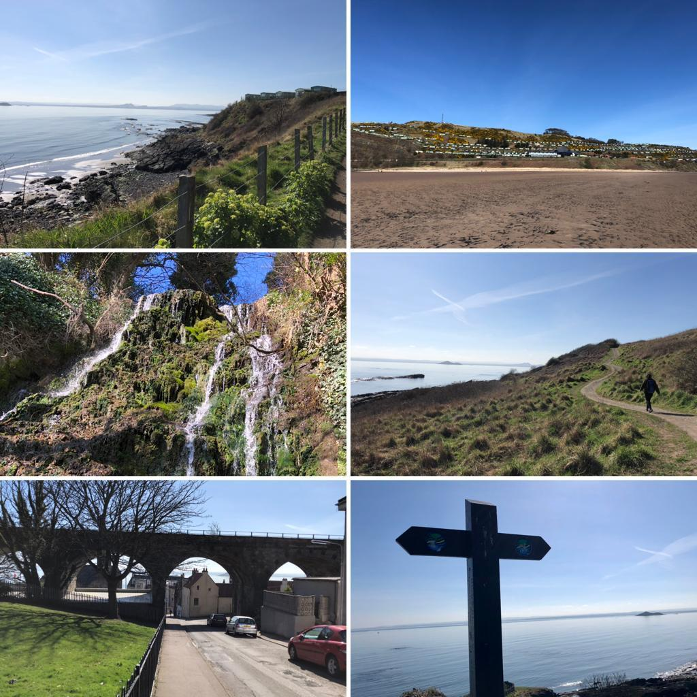
Stage 2: Kirkcaldy to Leven
Transport: Train from Edinburgh Waverly to Kirkcaldy. Walk the trail to Level. Return from Leven to Kirkcaldy by bus and back to Edinburgh by train on the same day.
Difficulty: This stage is about 19km (5 hours). Some uphill sections but stunning views make it worthwhile.
The trail starts off beside the road at Kirkcaldy promenade and goes off at Ravenscraig Castle. This section is absolutely spectacular till Buckhaven. We stopped briefly to checkout the Pictish caves at Wemyss. Several wind turbines and off-shore drill rigs dot the path. The path then turns into a slog as it passed through the cities of Buckhaven, Methil and Leven and the coastline disappeared from view.

Stage 3: Leven to Elie
Transport: Stagecoach bus service X60/X61 from Edinburgh to Leven and Elie (~2 hours by bus).
Difficulty: Fairly flat, 17 km walk along the coastline with a short uphill at Earlsferry.
This stage follows several picturesque beachs along east scotland coast. There are several cozy U-shaped coves along the way. Notably the long Leven beach that stretches from Leven to Largo and several shorter coves at Shell Bay, Earlsferry beach, Elie beach and Ruby Bay. These quiet and quaint beaches are some of the best ones east scotland has to offer. The water is crystal clear and the beaches have clean white sand. Catch the Robinson Crusoe statue at the birthplace of Alexander Selkirk and spot groups of Skylark birds and possibly seals at the grasslands of Dumbarnie Links Nature Reserve.
The trail climbs up a short uphill section over the dramatic cliffs of Earlsferry beach. Those looking for more adventures can try the Elie Chain Walk. The scramble takes you along chains built on some hazardous looking coastal terrain for half a km. There are 8 chains in total along cliffs from west of Elie village, hugging the cliffs towards Kincraig Point and Shell Bay. You can catch glimpses of the chain walk from the walking path over the cliffs where some vertical sections have upto 10 metres height gain/loss.

Stage 4: Kincardine to Limekilns
Transport: Stagecoach bus (X55) or ScotRail to and from Dunfermline. Change to Stagecoach bus (x24) to reach Kincardine and Bay bus (F6) to get back from Limekilns to Dunfermline.
Difficulty: Fully flat terrain, 18 km
Kincardine is one end of the Fife coastal path. The path starts along the currently closed Longannet power station (the last coal-fired power station in Scotland to shut down). However, the burning chimneys visible just on the opposite shore at Ineos Grangemouth are stark reminders that not much has changed and we are still highly reliant on fossil fuels. Several parts of the path run adjoining roads and very few parts have clear views of the coast. The path gets better as it passes through Culross and Torryburn. The Culross Abbey and Preston Island are quite scenic. The path in places runs along an old railway track that once supplied coal and limestone giving the trail a rustic feel. Just as we finished the trail at Limekilns we sat at an outdoor table to enjoy some food and soak in the weather at Coorie by the Coast restaurant. (In picture: a dragon sculpture in Limekilns called "Fiona’s Dragon", made of scrap metal and eyes of fused glass to give it a piercing stare. A wacky and fun thing we accidentally came across in a backyard along the path!)
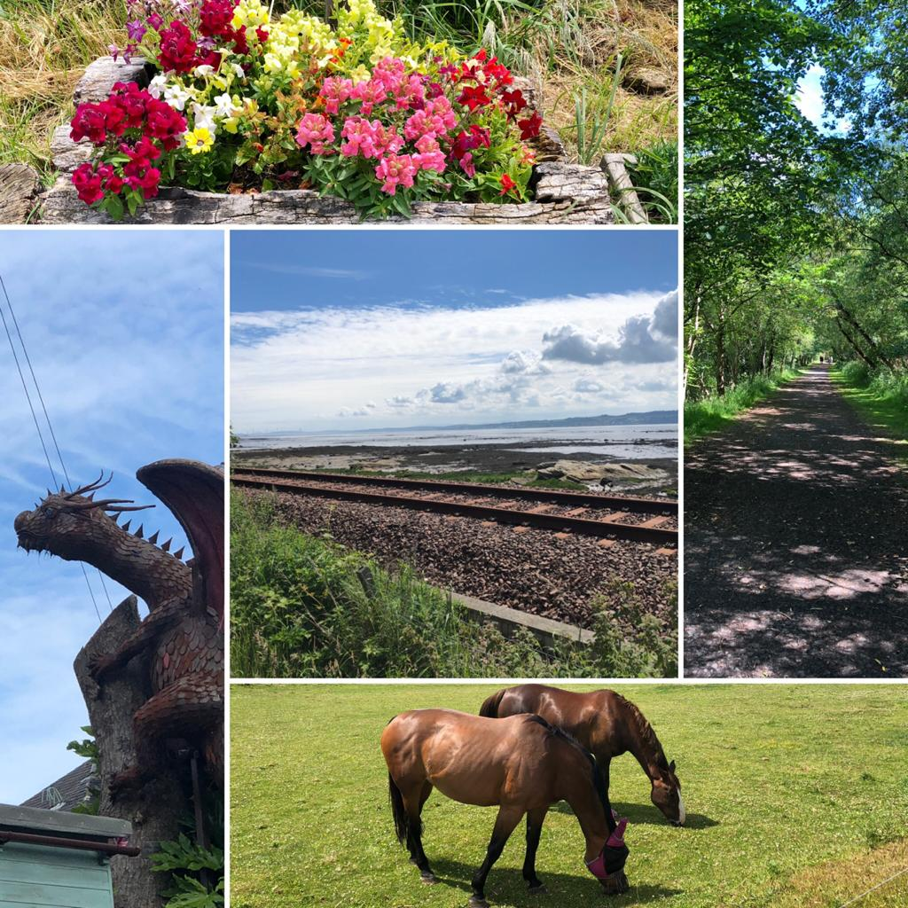
As an aside: Loch Leven Heritage Trail
Transport: Stagecoach bus (X56) from Edinburgh to Kinross and back
Difficulty: Flat, 21 km
This trail although is not part of the Fife Coastal Trail is still do-able as a day trip from Edinburgh. It lies beside the Kingdom of Fife, in the Perth and Kinross area and caught my attention when exploring the Fife Coastal Trail map. The trail walks somewhat beside the Loch and takes you to many beautiful spots all along - through varied woods, marshlands, wetlands and farms. The trail is well marked and flat and can be walked, run or cycled along the whole length. There are several cafes (Loch Leven’s Larder, Findatie Cafe, RSPB Loch Leven) along the way for a picturesque coffee and restroom breaks. The trail also offers several points to get close to the water at Burleigh Sand and beside River Leven.
There are several other activities of potential interest - a tour of the Scottish Lavendar Oil farm and factory, Scottish Glinding Center, Canoeing, kayaking or paddleboarding on the Loch. There are Park Benches at several viewpoints along the trail with poems etched on them describing the view from that seat.
I recommend doing the circuit anti-clockwise to get the dull parts out of the way earlier. The initial part in the anti-clockwise direction passes through beside large farms of wheat and tall reeds untill you reach the wildlife hides at the wetlands. If you are interested in spotting birds and other wildlife come equipped with a binoculars (and insect repellent sprays) to spend sometime in these hides. We used the cafes/restaurants at Kinross (near Kirkgate Park) to fuel up before we started and stopped at the Loch Leven Coffee Shop near the Findatie Car Park at about the half way point. The cafe is at a slight elevation and provides spectacular views of the entire Loch. Some other notable points of interest that can be explored along the way include Kinross House Estate, Loch Leven Castle, Portmoak Moss and Cashmere at Lochleven Mills (We were unable to visit these due to time constraints).
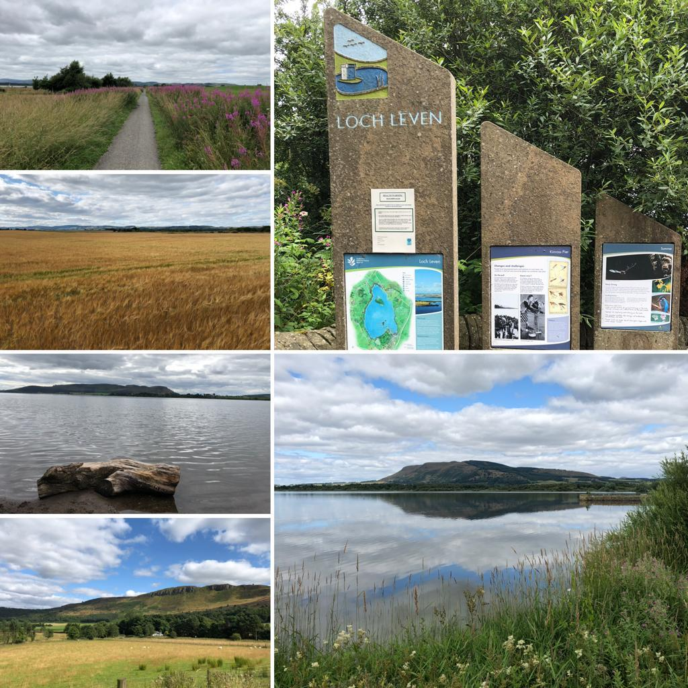
Stage 5: North Queensferry to Aberdour
Transport: Train both ways; From Edinburgh Waverly to North Queensferry, return from Aberdour to Edinburgh Waverly (very good frequency)
Difficulty: Flat, 14 km
At the beginning of this stage, we stopped by at Deep Sea World (a sea life aquarium) which is only a few hundred meters from the North Queensferry train station. Deep Sea World notably features sharks, stingrays, piranhas, clownfish (nemo), pufferfish, among many other interesting species. A conveyer belt takes you around the enclosure and we also got an opportunity to watch a seal feeding show at the end.
The coastal walk starts off with great views of the Forth bridges. There are some really lovely houses which overlook the bays and have great views. The path passes by old quarries and old communal gardens at Inverkeithing Bay. The Dalgety Bay cove has gorgeous enviable houses, lined alonside the path with great views. As we neared the Aberdour golf course, there are a range of shops, cafes and pubs. We completed this stage by taking some time off to enjoy the sunset at the Black sands Aberdour beach with views to the Ha Lighthouse.
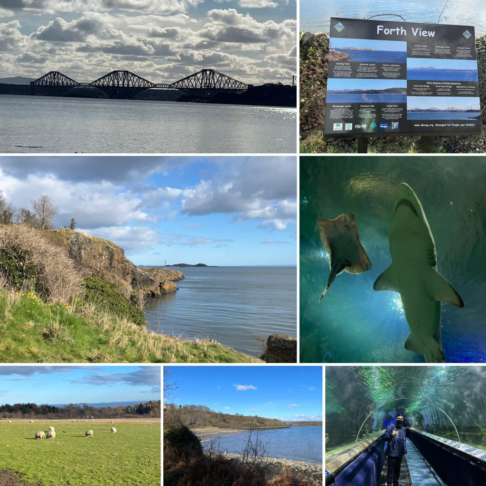
As an aside: Holy Island Circular and Pilgrims Way
Transport: From Edinburgh a 1.2 hour drive OR train to Berwick and bus 477 to Holy Island
Difficulty: Flat, 11 km
The Holy Island of Lindisfarne is a small island off the coast of Northumberland Coast AONB. The tide timings dictate when you can walk the pilgrims way or cross the causeway by car. The tide timings change daily and the safe crossing timings are available online.
We picked a day when the tide came in at 10:30am and receeded at 5:30pm. We crossed onto the island in the morning and stayed on the island till late evening. We walked the circular path around the island over the day.
The walk is fairly flat and easy. Doing the circuit anti-clockwise from the parking lot, you encounter some beautiful coves beaches all along its permiter. The Emmanuel Head Daymark pyramid marks the end of the shallow beaches and gives way to harsher cliff edges. The trails ends at the picturesque Lindisfarne Castle back as the trail heads back into the village.
There are a few shops in the village offering coffee, cookies and ice creams but other than that go prepared with packed good if you want some proper meals.
Stage 6: Elie to Anstruther
Transport: 1.2 hour drive or Stagecoach (X60) to Elie
Difficulty: Flat, 12 km
We started the walk at the Elie lighthouse on a windy morning. A brief photo stop at Lady's tower enroute provides a good view back of Elie and Earlsferry beaches.
Onwards, at the town of St. Monan's, the old windmill and the salt pans showcase the heritage of how salt was once made here by natural evaporation from sea water. This stretch of Fife is truly beautiful and head and shoulders above the rest of the stages.
The lively town of Anstruther has wonderful restaurants and cafes on the harbour road which make for a wonderful stop. The day turned to be warm and sunny when we reached here which gave us the opportunity to enjoy lunch and drinks outdoors at The Boathouse.
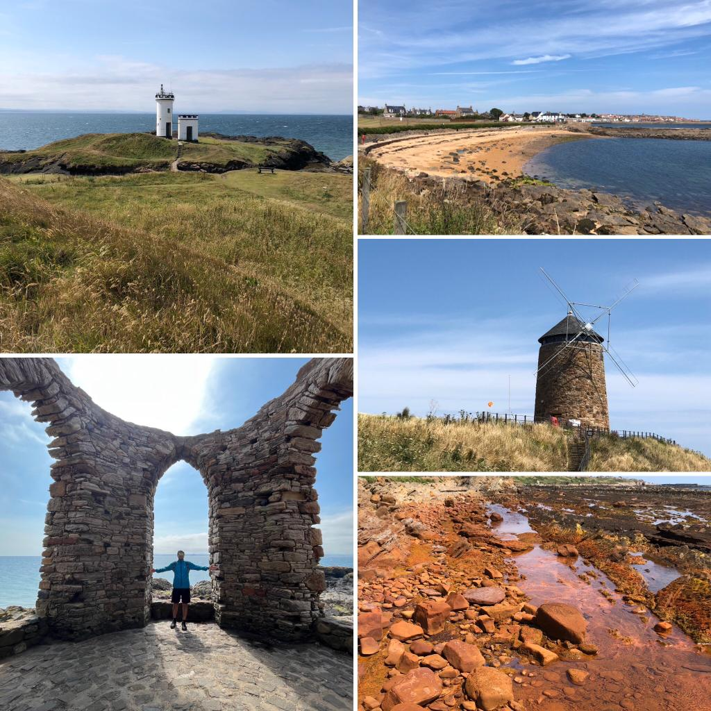
Stage 7: Anstruther to Crail + Isle of May
Transport: 1.5 hour drive or Stagecoach (X60) to Elie
Difficulty: Flat, 7 km
We took the first of the day speed boat (pre-booked) from Anstruther with Isle of May Boat Trips. It takes roughly an hour to reach and we were given about 2.5 hours to walk around and explore the island. The picturesque island is a nature reserve, famous for various species of seabirds (puffins, shags, guillemots) which visit the island during the summer months. We also spotted playful seals along its sharp vertical coastal cliffs on the north side. The lighthouse beacon captures how time has stood still on this relatively undisturbed island.
After returning to Anstruther, we walked the trail to Crail which features Caiplie Caves enroute. The caves have sandstone rocks with beautiful contrasting colors and textures.
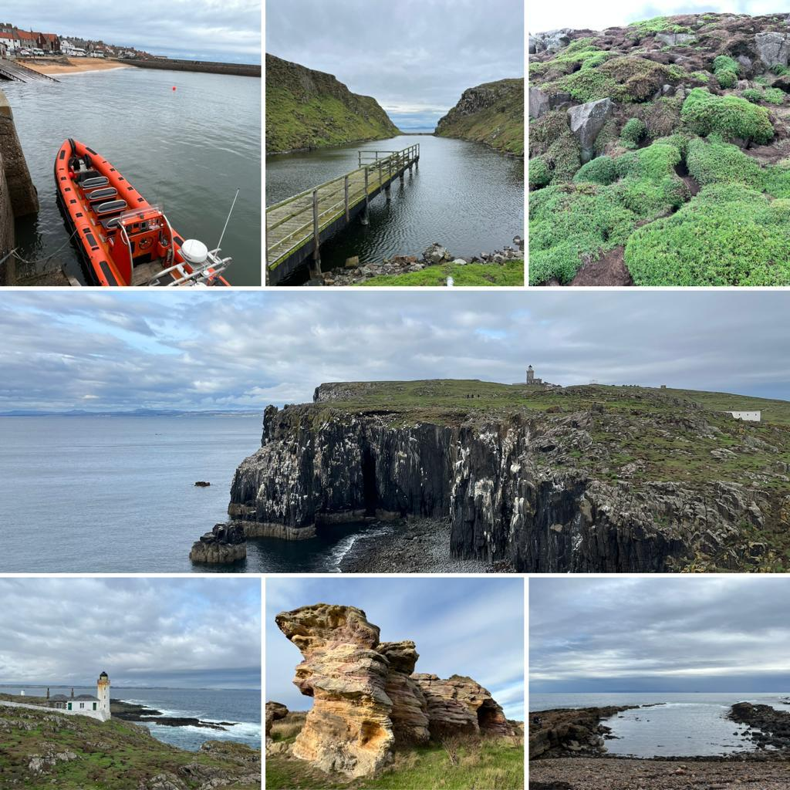
UPDATE:
To complete these latter few stages of this walk, the drive to and from Edinburgh were getting too long (~2 hours each way). So I decided to stay up at Elie Holiday Park for a week in spring 2023. This allowed us to easily drive to the start point, finish a stage and return back. The next 4 stages below therefore start from Elie.
Stage 8: Crail to Kingsbarns
Transport: started from Elie - 20 mins drive to Crail; Stagecoach (95) to return from Kingsbarns to Crail, drive back to Elie
Difficulty: Flat, 10km
We started from Crail on a bright sunny day. Crail is a very pretty fishing town with a wonderful views to the beach.
But as we turned north at Craighead, haar (coastal fog) rolled in and made for a rather bleak and gray walk, despite it being sunny inland -- a testament to the unpredictable Scottish weather.
There is a luxury holiday park and several golf courses along the coast with views to the large open seas.
We stopped at the Cheesy Toast Shack on Kingsbarns beach due to the haar and continued the walk from there, the following day.
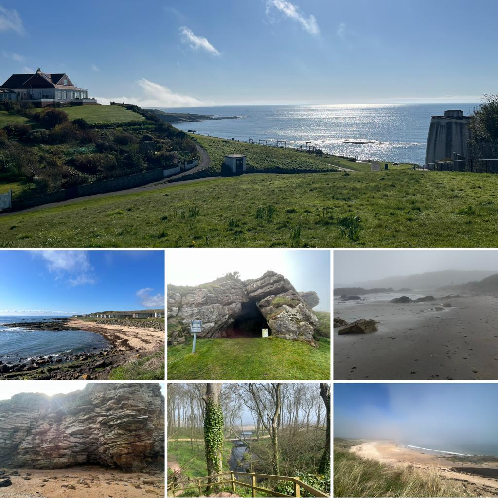
Stage 9: Kingsbarns to St Andrews
Transport: started from Elie - 25 mins drive to St Andrews; Stagecoach (95) to return from Kingsbarns to St Andrews, drive back to Elie
Difficulty: 14km, undulating path which rises and falls along the coast + some bits on walks on soft beach sand (check tide times) + some minor scrambling
This section is the one of the best parts of the entire walk. We did this section starting from St Andrews and walked towards Kingsbarns. St Andrews is a picturesque town sitting around several golf courses and filled with golf shops!! The large castle and cathedral ruins are still beautiful and majestic. These structures are visible from a long distance as you walk along the coastal path.
Going further away from the town, the path features some beautiful isolated beaches (East Sands, Salt Lake Beach, Red Beach), a walk alongside a river (Kenly water) and interesting rock formations (Buddo rock, Rock and Spindle).
Several rocks and grasslands along the beach are host to several bird flocks. It makes for a wonderful walk, listening to the birds singing and the honeybees buzzing along the way.
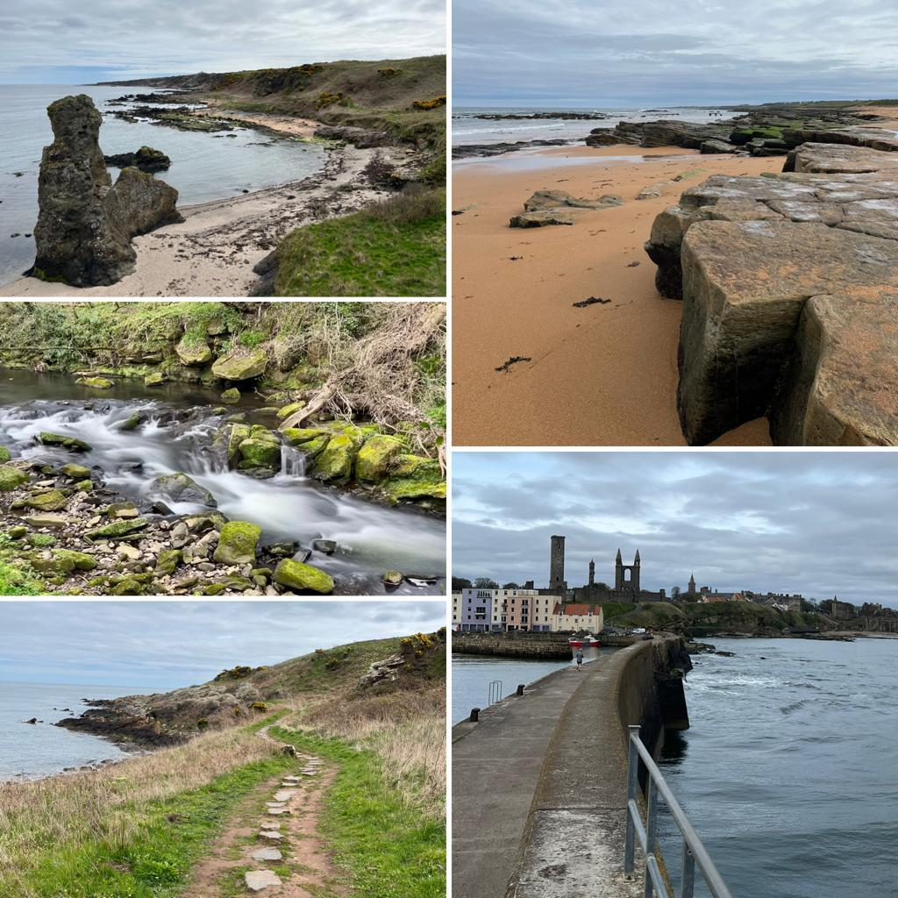
Stage 10: St Andrews to Leuchars
Transport: started from Elie - 25 mins drive to St. Andrews; Stagecoach (99) to return from Leuchers to St. Andrews, drive back to Elie
Difficulty: 10km, flat
This stage is completely along the busy and noisy A91 road with the coast line out of sight. This section is absolutely dull and has no views whatsoever. At the mouth of river Eden, the path goes over the Gair bridges, which connects the military town of Leuchers to St. Andrews. I h3ly recommend that people walking the coastal path skip this section entirely.
The next section goes beside Tentsmuir National Nature Reserve for 15km and there is no public transport / bus connectivity until Tayport. Hence, although we had fresh legs on a sunny day, we had to stop and return back another day to continue from here.
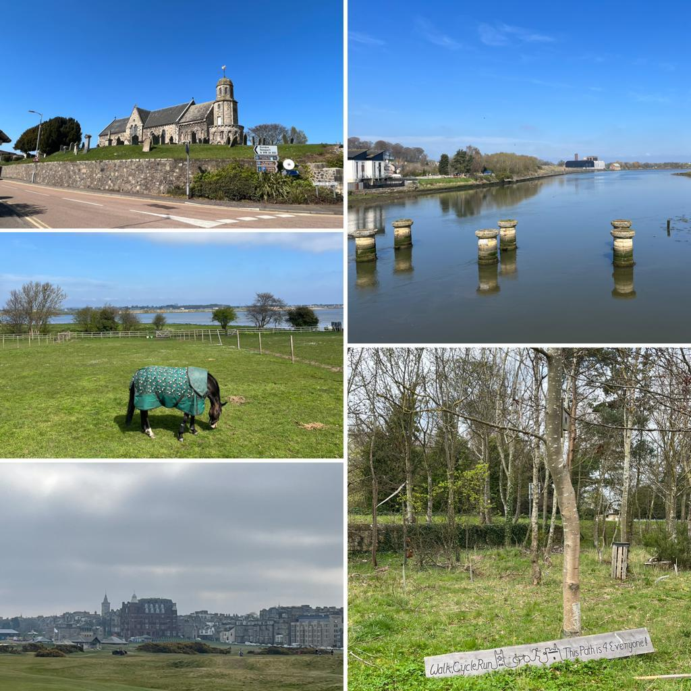
Stage 11: Leuchars to Tayport
Transport: started from Elie - 25 mins drive to Leuchars; Stagecoach (42A) to return to Leychars from Tayport, drive back to Elie
Difficulty: 16km, flat
The majority of this stage goes along the Tentsmuir Nature Reserve. As you leave the city of Leuchars, you enter the farmland which has moss and heather growing on the sand flats.
The path then turns north at the Kingshaldy beach which has a small shop and benches to have a relaxed lunch. As you walk along the woods of the reserve, you get to admire the diversity of birdlife. There is a visitor information center along the way which describes river Tay, how the salt flats and sand dunes form. The open sand flats and dunes look straight out of a desert scene, except for the cold winds.
Further along the path, it was saddening to see the large scale tree felling operation and the amount of forest that was cleared out. The path then goes along a golf course and enters the town of Tayport.
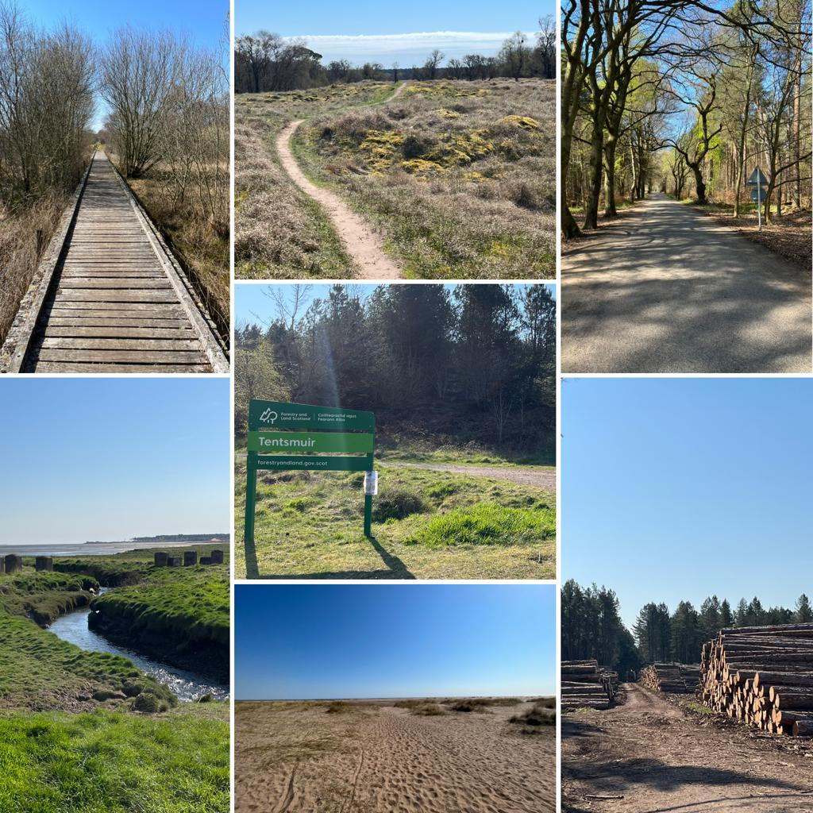
Stage 12: Balmerino to Newburgh
Transport: Train from Edinburgh to Dundee, Bus to Gauldry, walk to Balmerino; return Bus from Newburgh to Ladybank, train from Ladybank to Edinburgh
Difficulty: 24.5km, undulating path, climbs and descends multiple hills
The fife coastal path website incorrectly lists this section as 17km.
This section of does not trace the coastal path and is infact over woodlands, fields, hills and roads.
It is indeed the most strenous part of the walk and was even more arduous than expected due to several boggy/muddy parts and unexpected rain showers (late winter/early spring).
There are no towns or benches to take breaks or fill up and the route is fairly sparse for miles, so go well prepared. We were completely fatigued when we reached Newburgh due to slow progress and long lonely walk.
After almost 200km of walking along this county's beautiful coasts, an arch marked the end of the path!
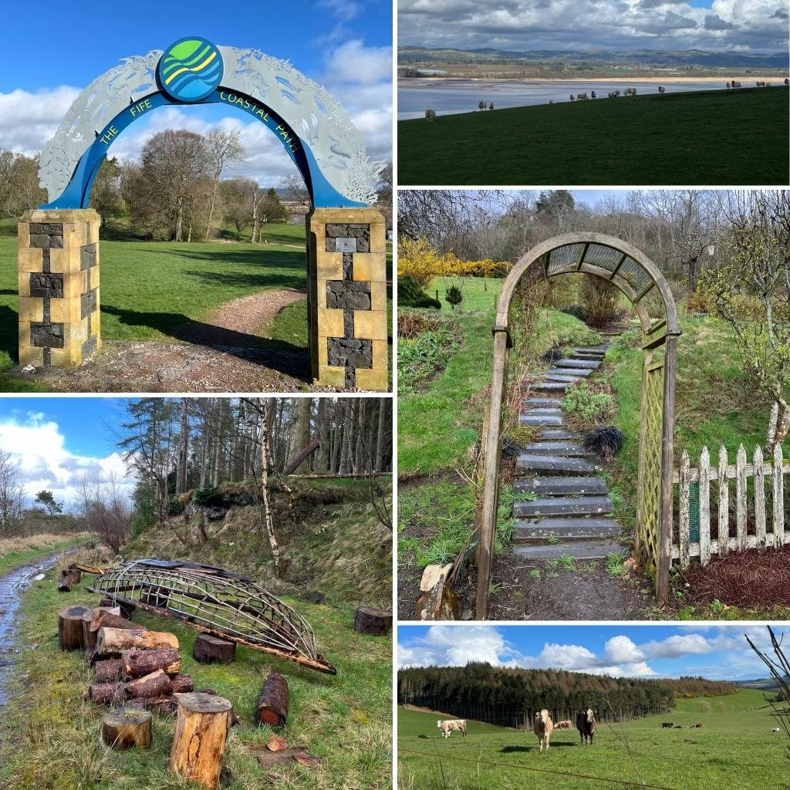